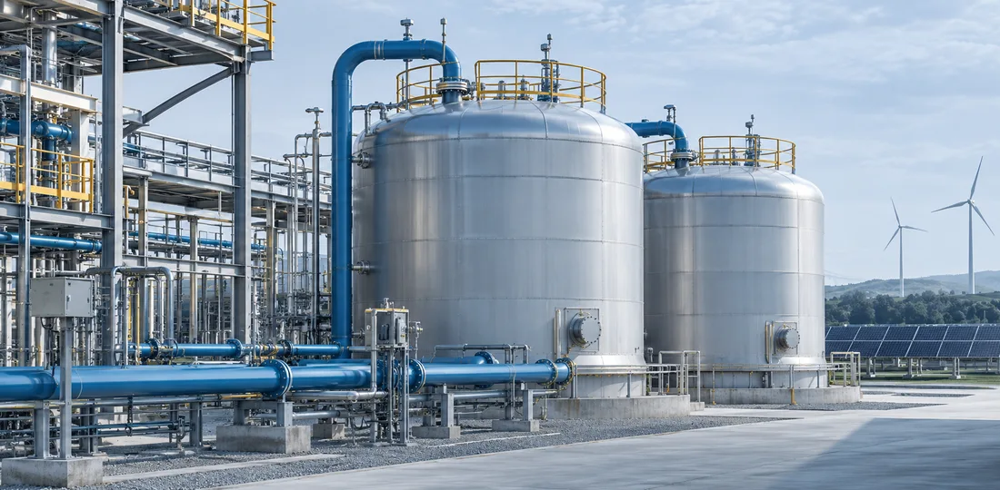

过往项目
工作经历
容诚会计师事务所 · 上海
战略咨询师 · 咨询五部
- 半导体材料转型：梳理晶圆制造、封装测试及材料应用，按技术方向、业务匹配度、企业规模和可收购性筛选潜在标的，形成并购长名单与短名单。
- 氢能市场进入：比较两轮车、接驳巴士、无人机与 eVTOL、分布式发电四类场景。独立搭建行业数据库，梳理落地案例并开展专家访谈，负责约 60% 的商业计划书章节研究与撰写。
- 浦东企业出海白皮书：结合进出口数据和企业案例，研究集成电路、生物医药、汽车及零部件、机器人四个产业，独立撰写超过 50% 的白皮书内容，并代表团队参加专题研讨会。
- 国际医疗城规划：研究产业发展与招商方向，搭建医院床位配置及建设运营成本测算模型，独立完成 70 余页汇报材料。
- 项目提案与跨境沟通：独立完成 15 余份建议书、投标文件及项目申请材料，为 10 余场海外分部及客户会议提供双语支持。
华福证券 · 上海
研究员助理 · 电新组
- 公司研究：结合通润装备年报、财务报表及行业数据，分析光伏逆变器业务、盈利情况和市场环境，搭建深度报告框架，独立撰写 15 页分析，约 60% 的内容被正式报告及公众号发布内容采纳。
- 行业数据跟踪：按周、月更新光伏产业数据库，跟踪硅料、组件、逆变器及原材料价格和逆变器海关出口量，支持团队分析价格变化与海外需求。
教育背景
曼彻斯特大学QS 2027 · 并列第 40
硕士 · 发展经济与政策
康涅狄格大学QS 2027 · 并列第 458
本科 · 经济学
技能
工作软件
Excel、RStudio、PowerPoint、Think-Cell、Wind、PitchBook、Orbis
工作技能
行业研究、专家访谈、商业尽调、行业数据库搭建、成本测算
AI 工具
Codex、Kimi、WorkBuddy
语言
中文、英文（托福 110，GRE 330）